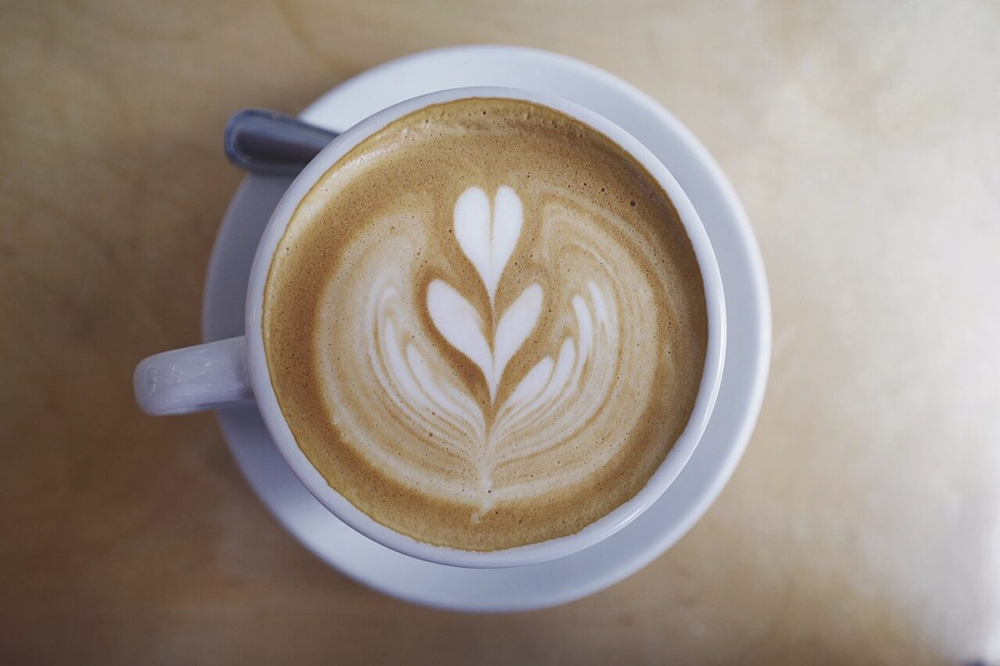
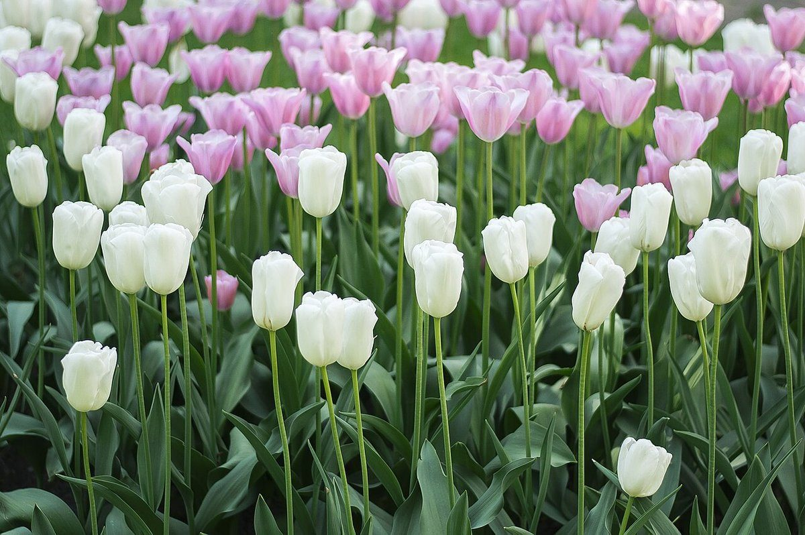
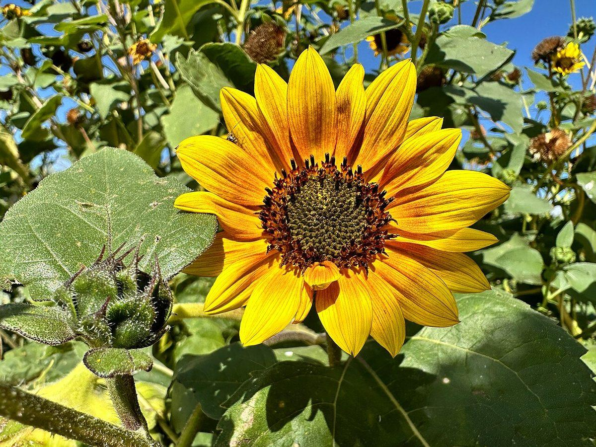
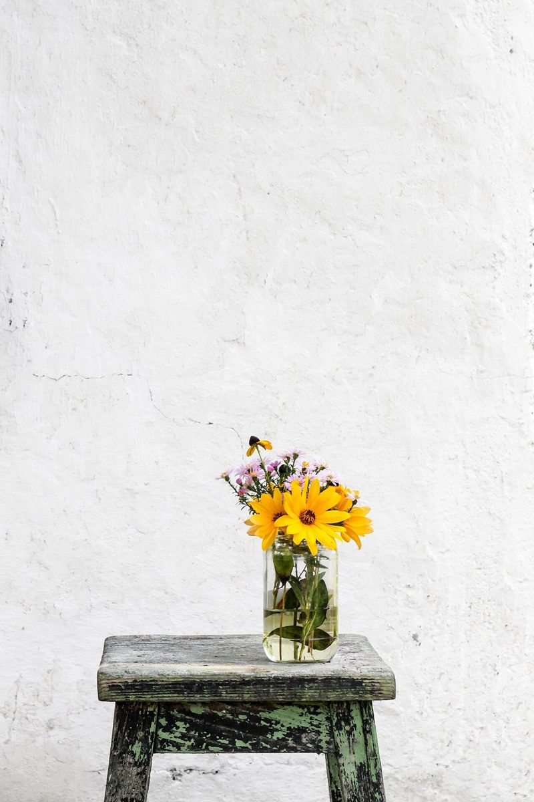

写真はフラワーとコーヒー、パンのイメージです。お店のものではなく、お店で提供している商品を示すものでもありません。
制作側の連想
テーブルサッカー台を、配置図にしてみる
このサイトは、テーブルサッカー台を上から見たつもりで作りました。六つの部位に番号をふり、上の図と並べています。制作側の連想で、お店の理念・由来とは無関係です。実際の製品の仕様を示すものでもありません。
凡例
六つの部位
- 1ロッド台を横切って渡す、選手を取り付けた細い金属の棒。
- 2選手ロッドに固定された、ボールを蹴る小さな人形。
- 3グリップロッドの端につけた、握って押し引きしたり回したりする持ち手。
- 4フィールドボールが転がる緑の盤面。白い線で区画を示す。
- 5ゴール口盤面の両端にあいた、ボールが落ち込む開口部。
- 6スコアカウンター台の側面に渡した、玉などで得点を数える仕組み。
ギャラリー(イメージ)
花とカフェのイメージ写真




写真はイメージです。お店の商品や店内を示すものではありません。
ご案内
お店のこと(確認できたものだけ)
| 所在地 | 〒970-8025 福島県いわき市平南白土1丁目16-12 |
|---|---|
| 電話 | 準備中 |
| 営業時間 | 準備中 |
| 定休日 | 準備中 |
| ご予約 | 準備中 |
| 駐車場 | 準備中 |
| SNS | Instagram @a.noeud_flower_and_cafe |